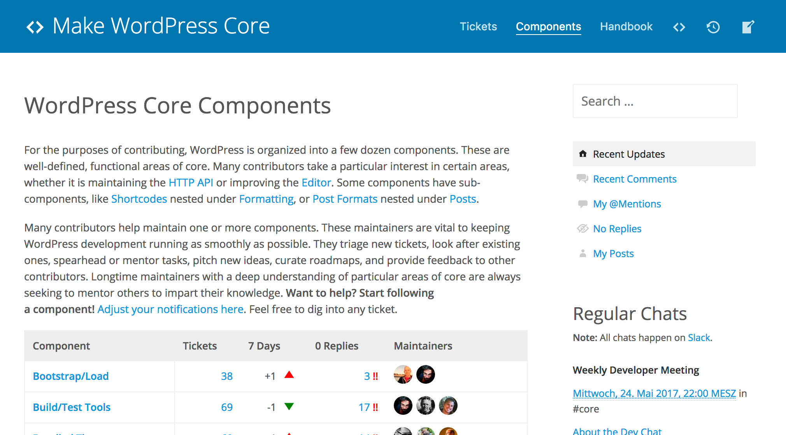

Contributing to WordPress Core
Techniques and expectations
A presentation by @felixarntz
What are the benefits of contributing to core?How do I start contributing to core?How can I keep contributing to core?
WordCamp Europe 2015
original photo by Florian Ziegler
How can I start? My story here:
WCEU 2015: first contributor day
core table led by Konstantin Obenland (release lead 4.3)
task: test the heck out of the new Site Icon feature
#16434 ü§ì
first contribution: small bug-fix that occurred sometimes when having JavaScript disabled
modified 16 lines of code out of the hundreds for the feature
[32994] ü§ì
by the end of the day: first props!
only a small fix shared with several people, but big feature (motivating!)
so eager that I even worked on another ticket later that day while I was in my hotel room for an hour
Contributor Day attendee
Very disciplined self-learner
Processes explained at the core table or through a workshop
Processes explained in core handbook or wordpress.tv videos
Questions answered in person
Questions answered in new contributors meeting (every Wednesday on Slack)
Good tickets to be worked on are provided, possibly both major and minor
Good tickets to be worked on can be found through the good-first-bug keyword
→ If possible, attend a contributor day!
first props either with a small contribution to a major feature
or by completing a smaller ticket on your own
depends on personal preference, both is equally valuable
Mo contributing, mo issues
original photo by Detlef Heese
over the next half year, occasionally worked on tickets here or there
sometimes at home, but mostly at WordCamps or related events
this is the first one I opened
Mo contributing, mo issues
original photo by Detlef Heese
very welcoming response; that was important
Mo contributing, mo issues
original photo by Detlef Heese
then closed :(
BUT: a very elaborate response and reasoning was given (backward-incompatible change)
however, when these add up, frustration is waiting around the corner
especially when you've put quite some work into a patch before
Mo contributing, mo rewards
but I also had very motivating moments
first bigger thing, at least to me: WP_Term class
very simple class, but I played a significant part in getting a class into core!
Preventing frustration
Don't patch immediately, discuss first.
Learn the WordPress philosophies and make them part of your mindset.
Place the project's goals ahead of your own.
Let others convince you when necessary, convince others when necessary.
If you disagree initially, step away, think about it further, and come back later.
Article: The qualities of a great WordPress contributor (Andrew Nacin)
looking back, I would've been able to prevent some issues if I had been more aware of these things
don't be stubborn
be open-minded
Dealing with rejection
If no good reason is given, ask for one explicitly.
If you disagree, dig in further, ask for a third opinion.
If you still disagree, your thoughts may not comply with the project's philosophies.
Always keep your calm and be polite.
Don't take anything personally!
Video: WPDrama, The Four Agreements,
Don't get rude or just walk away.
Maybe your reviewer made a mistake. Get over it for now, and have another try later, or if really necessary, ask someone else for their opinion.
WordCamp US 2015
original photo by Kari Leigh Marucchi
at the time I worked for a multinetwork client
had watched a wordpress.tv video on it by JJJ
at WCUS I briefly talked to him about it
in the end he said "Hey, the team there is really small. If you are interested, just go help out there."
Alright!
Joining multisite üëã
joined multisite channel
followed tickets (notification preferences)
worked on only a few things, but generally kept an eye out
at some point I was working on a ticket where I didn't receive any feedback
Joining Slack meetings
had noticed there are multisite meetings
so I joined one and expressed my willingness to contribute more
Direct communication
¯\_(ツ)_/¯, but: Be persistent when you don't receive an answer after a while!
I got my feedback. But that's that.
Of course I also got an actual response.
The gist was that the ticket is super-complex and people have been avoiding it.
Btw: Ticket is still open as of today.
Finding your focus
Find out what interests you the most and focus on it.
Participate regularly in Slack meetings for that component.
Direct communication works much better for discussions than asynchronous.
It's perfectly fine to only say "Hi" in the beginning and lurk.
By showing up, learning and presenting ideas, you build more trust over time.
And as a side note: It's usually not a good idea to focus on a very old ticket early on.
If there's no Slack meeting, contact a maintainer, discuss with them, maybe start one.
Regular meetings give you the best idea of what's important for that area right now, you also learn about all the internal processes etc.
Side note: Old open tickets are usually still open for a reason (complex, insignifcant, or both).
WordCamp Nürnberg 2016
original photo by Detlef Heese
I had seen a call for component maintainers on make.wordpress.org
at WCNBG I asked Dominik Schilling whether I could be maintainer for Post Thumbnails (smallest component)

https://make.wordpress.org/core/components/
a bit later I also became maintainer for multisite
more responsibility and permissions on Trac
Do it better than me: Don't just become a maintainer of a random component because it's small. Become a maintainer of what you're interested in.
Becoming a component maintainer
Once you're more familar with your component, consider becoming a maintainer.
Provide responses for new tickets, and make new contributors feel welcome.
Focus on others' tickets just as much as on your own ones.
Don't be overly critical; think suggestions through before posting feedback.
Milestone tickets reasonably.
As you become more experienced, accomodate new contributors so that the need for them to deal with all these issues remains as little as possible.
Don't just milestone because it's your ticket.
Be responsible about your new responsibility.
See how you are now more on that side of things? We're making progress.
WordCamp Europe 2016
original photo by Florian Ziegler
at WCEU 2016, I met Jeremy Felt and Jonny Harris in person (after working with them on a weekly basis in multisite)
very productive to talk about some pain points in person and collaborate directly at contributor day
Meeting in person
Continue going to WordCamps.
Meet and hang out with your fellow contributors.
Have a beer with friends from all over the world! üçª
get to know the people behind all the names and faces
in-person discussions, as rare as they happen in our community, are the most productive way of discussing topics
Time for Bachelor Thesis core
original photo by Ruhr-Universität Bochum
after WCEU I started working on my Bachelor thesis in college
I took some time off from regular work to focus on it
but what actually happened...
Time for Bachelor Thesis core
original photo by Ruhr-Universität Bochum
I didn't spend as much time on my thesis as I probably should have, and contributed to core a lot.
new tasks: occasionally writing weekly recap posts for multisite meetings, helping out with the dev-note for 4.6
of course I still worked on my thesis quite a bit, through which I learnt a lot about accessibility, exposing a new core area of my interest
for 4.6, I received the "Recent Rockstar" status; up to this day I have no real idea what that means, but it felt great!
It's not just about code
Be open to new tasks.
Document changes precisely.
Write recaps so that others can keep up to date.
Collaborate with other teams like design and accessibility when needed.
Sometimes, do work that may not be as enjoyable, but still needs to be done.
alright, I get it, you might not have the chance to let your work sit for a while
I was still in college, had saved some money, plus cost for German college is ridiculously low compared to here
you don't need to be a committer to have an important role; by participating and helping out with all these things you're making a significant difference
Final thesis day
fast forward end of November 2016 → last day before handing in my thesis
had a hard time falling asleep
after laying in bed awake for hours, I looked at my phone → :o
I had not expected this at all; of course I could bury my thoughts of falling asleep
I stayed up, read some related parts of the core handbook (so German), went to college, handed in my thesis and had a great day of sleep
Learning and iterating
You don't need to be a code genius to play an important role in core.
Keep contributing, learn from mistakes, improve your skillset over time.
You need to be passionate, willing to learn, and understand the core philosophies.
Your goal should not be becoming a committer, but a valuable contributor.
The latter is very likely to eventually give you commit anyway at some point.
WordCamp US 2016
original photo by Alain Schlesser
at contributor day I did my first commit
it suddenly made sense to me why some of the tickets and patches I had written and pushed for earlier had not been committed as quickly as I would have liked them to
it was great to give someone else their first props in my first commit
my first commits I would always run by my committer mentor Jeremy Felt, before eventually receiving green light to go by myself
Pay attention to details
Consider edge cases.
Keep in mind that even a small change might break BC at another location.
Write precise ticket descriptions and commit messages.
Write tests to verify functionality and integrity, don't break any through a commit.
Always make sure your code is reviewed by (other) experts in the respective area.
Of course sometimes unit tests break through a commit, but the mindset is you should never break them.
WordCampMania
went to quite a few WordCamps earlier this year, to keep in touch
of course I didn't stop, I've been still contributing regularly
less time now than when I wrote my thesis, but I still make sure I do a few hours per week
started working on an Enhanced Settings API project with the accessibility team
started working on Roles/Capabilities more and more (became a maintainer there later)
Community Summit 2017
original photo by Alex Shiels
attended my first Community Summit before WCEU in Paris
participated in a few interesting discussions
the most important result of some chats there for me personally was the new core PHP team that I started with a few others like Alain Schlesser
To be continued...
I'm excited where the next part of my journey will take me
I'm also excited to hear some of your core contributor stories
I hope with this talk I've been able to take some pain points out of your path that I ran into on mine
Summary
Learn the WordPress philosophies.
Always be polite and open-minded.
Be persistent, but patient with tickets and patches.
Explain issues with as much detail as necessary, but as little as possible.
Find an area that interests you and focus on it.
Participate in meetings regularly.
small anecdote: circling back to #15691: if I had known it would still be open today without much more feedback, I would have felt quite terrible about it
today I just accept it: while valuable, it is a complex task and currently not a priority enough to be worth the effort
I'm not pushing for it at all atm, there's enough other great things to be worked on
last but not least: such tasks not being worked on because they're not a priority can only change with more regular contributors onboard: so attend the contributor day tomorrow!
Thank you!
Felix Arntz
Plugin Developer / Core Committer / Freelancer
Contributing to core has introduced me to some of the most amazing people on the planet. It was like I showed up to fix a software bug and was bitten back by the community bug.
- Joe McGill
WordPress helped me get to where I am today. Now I want to give something back to help people do the same. Together we can make the web a better place for all.
- Pascal Birchler
It's rewarding to work on a project that powers over a quarter of the web. Knowing that a new feature or enhancement is going to have an impact on millions of people is a great motivator to contribute to WordPress.
- Weston Ruter
if you're not convinced why, look at these quotes
{kind=link}